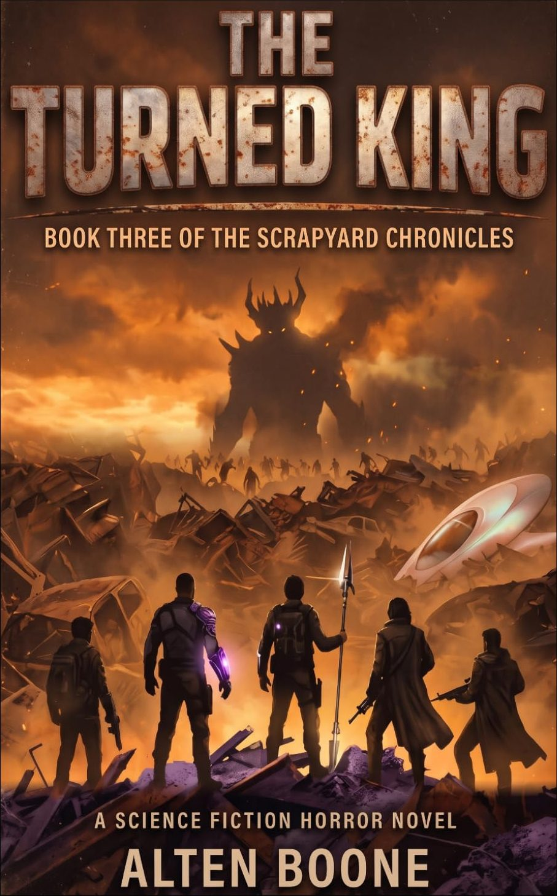

The Scrapyard Chronicles · Book 3
The Turned King
Survival science fiction · Published Nov 3, 2026 · 307 pages · Paperback · ISBN 9798167580022

The walls of Terminus have fallen. The Scrapyard has never been more dangerous.
Hunted across the Wastes by a thinking, organized horde, the survivors of Terminus flee south with a frightened alien child, a stolen map and one slim hope: a crashed starship with a beacon that could call for rescue.
But the Scrapyard has other plans. An ancient Aethelgard monolith guarded by a lonely gunslinger, a vehicle graveyard ruled by Nazis, and a grey king who is beginning to remember who he was all stand in their way.
Matt carries an alien weapon he doesn’t understand. Amanda is learning what it costs to wield hers. Hugon is paying a price no one else can see. And with every mile, the survivors are finding out how much they’ll sacrifice to see the next sunrise.
Some doors should stay closed. Some beacons should never be lit.
Book 3 of The Scrapyard Chronicles. Best read after The Scrapyard and Terminus.